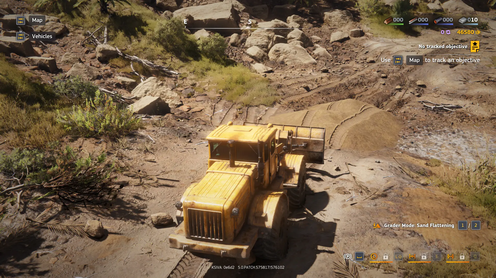

Впечатления от RoadCraft

Впечатления от RoadCraft.
Добрался на выходных до демо-версии RoadCraft. Прохождение заняло (по цифрам Steam) около 4 часов.
Впечатления смешанные. Как и в случае с Expeditions, разработчики захотели сделать SnowRunner, но не совсем SnowRunner. Получилось так себе, как и с тем же Expeditions.
Самая большая проблема — они берут всего один аспект SnowRunner и выкручивают его на максимум. В Expeditions — это исследования местности, в RoadCraft — ремонт инфраструктуры. Но формула SnowRunner в таком случае рассыпается и играть становится не так интересно.
Чести ради, в RoadCraft было проще втянуться, чем в Expeditions, там я не продержался и пары часов. А тут демку до конца прошёл.
К слову, в отличие от SnowRunner, RoadCraft можно купить в ру-регионе Steam. Но смотрю на цены… Уф. Сейчас скидки до 1749 рублей (30% скидка от 2499 руб.) Нет уж, я лучше пойду в классику какую-нибудь поиграю…